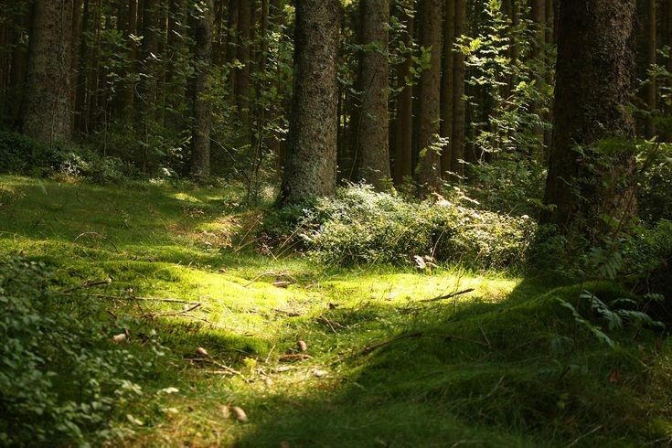
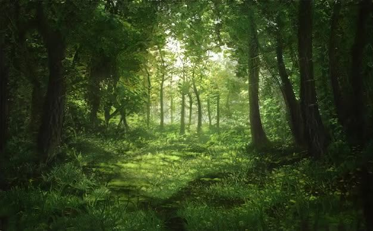
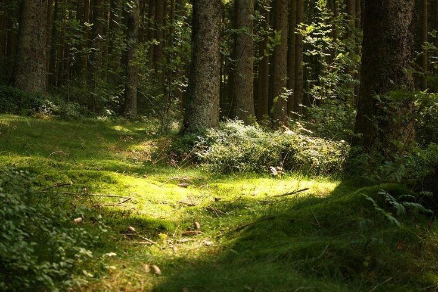
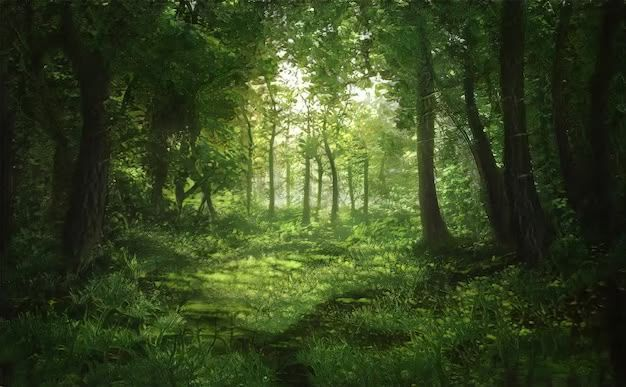

Brasil registra aumento no reflorestamento em 2025
Novos projetos de reflorestamento têm recuperado áreas degradadas, promovendo a preservação da biodiversidade e o equilíbrio climático.
Este é um espaço dedicado à preservação ambiental, educação e divulgação de ações sustentáveis que ajudam a proteger o nosso planeta.
.jpg)
.jpg) 



O meio ambiente é o conjunto de todas as condições naturais que sustentam a vida na Terra. Ele inclui o ar, a água, o solo, a fauna e a flora. Preservar o meio ambiente é fundamental para garantir a saúde e o bem-estar de todas as espécies, incluindo os seres humanos.
A educação ambiental é uma ferramenta poderosa para formar cidadãos conscientes e engajados na proteção do planeta. Aprender desde cedo sobre a importância da reciclagem, da economia de recursos naturais e do respeito à natureza é essencial para construirmos um futuro sustentável.
Novos projetos de reflorestamento têm recuperado áreas degradadas, promovendo a preservação da biodiversidade e o equilíbrio climático.
Programas que incentivam o uso de bicicletas e transportes elétricos estão ganhando espaço nas grandes capitais brasileiras.
Organizações ambientais lançam ações globais para combater o descarte de plástico nos mares e proteger a vida marinha.
Este container está oculto por CSS.